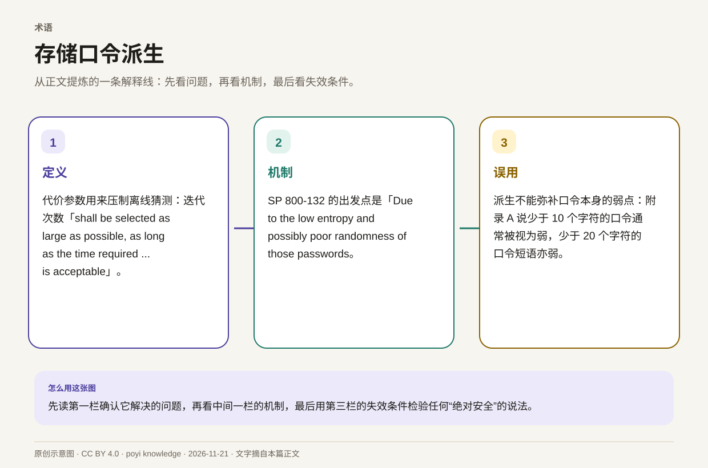

原理与机制
术语：存储口令派生（Key Derivation for Storage）。SP 800-132 的出发点是「Due to the low entropy and possibly poor randomness of those passwords, they are not suitable to be used directly as cryptographic keys」，并且「these passwords shall not be used directly as cryptographic keys」。派生式 mk = PBKDF(PRF, C)(P, S, kLen) 得到主密钥 MK；MK 或者用于生成保护数据的数据保护密钥 DPK，包括把 MK（或其片段）直接用作 DPK 的选项，或者经批准的密钥派生函数生成中间密钥，且「The MK shall not be used for other purposes」。

为什么重要
代价参数用来压制离线猜测：迭代次数「shall be selected as large as possible, as long as the time required ...is acceptable」，文档推荐最少 1,000 次，并说明对于特别关键的密钥、算力很强的系统或不在乎用户感知性能的系统，10,000,000 次也可能合适。salt 的全部或部分「shall be generated using an approved Random Bit Generator」，随机部分至少 128 位；§A.2.1 说明由此可能的密钥数约为 2^sLen。
应用与实例
该建议「approves PBKDF2 as the PBKDF using HMAC with any approved hash function as the PRF」。派生长度 kLen 至少 112 位，并受 PBKDF2 的 (2^32 - 1)·hLen 上限约束。§5.4 要求数据保护密钥的保护「shall use an approved authenticated encryption mode」，或采用批准的加密算法与批准的认证方案组合。
边界与攻击面
派生不能弥补口令本身的弱点：附录 A 说少于 10 个字符的口令通常被视为弱，少于 20 个字符的口令短语亦弱。迭代把猜测代价从约 2^t 提高到 C·2^t 量级（§A.2.2），只是放慢离线攻击；§A.3 指出错误口令「it is impossible to generate the correct MK」，因此方案依赖口令本身，一旦存储数据泄露，离线破解仍然可行。
历史与背景
SP 800-132 第一部分由 Turán、Barker、Burr 与 Chen 撰写，2010 年 12 月发布；标题与摘要把范围限定在电子存储数据的保护，§4 引用的密钥派生函数规范为 SP 800-108。
逐步示例与核验
定义检查模型
上位概念 → 区别特征 → 正例 → 反例 → 易混边界。正例必须落在外延内；反例必须刚好跨过边界；同义词不能代替定义。
参考出处
- Wikipedia search entry for 存储口令派生. https://zh.wikipedia.org/w/index.php?search=%E5%AD%98%E5%82%A8%E5%8F%A3%E4%BB%A4%E6%B4%BE%E7%94%9F
- RFC 4949: Internet Security Glossary, Version 2. https://www.rfc-editor.org/rfc/rfc4949